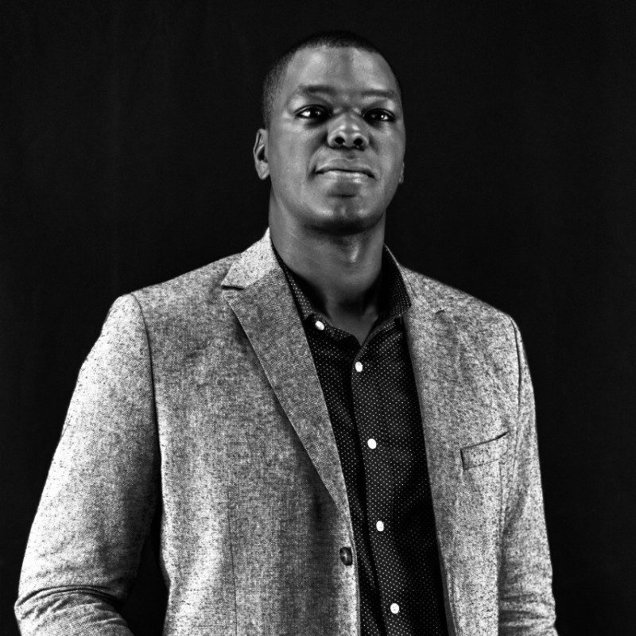

Tower sharing e soluções de telecomunicações em Angola desde 2017. Mais de 200 sites ativos em 18 províncias.
Conheça nossa históriaFundada em maio de 2017, a ANTOSC é pioneira no modelo de Tower Sharing em Angola e atua na construção, gestão e operação de infraestruturas de telecomunicações críticas para o país.
Com mais de 200 torres ativas, apoiamos operadoras, ISPs e organizações que dependem de uma infraestrutura robusta, segura e preparada para crescer.
Combinamos engenharia, tecnologia e excelência operacional para tornar a expansão das redes mais eficiente, sustentável e acessível — permitindo que os nossos parceiros se concentrem no que fazem melhor: conectar pessoas, empresas e comunidades.
Entregar infraestrutura crítica de telecomunicações em Angola, com excelência operacional e valor consistente para acionistas e clientes, apoiada por uma rede robusta de +200 sites.
Ser referência em partilha de infraestruturas de telecomunicações, liderando em qualidade, inovação e sustentabilidade em Angola.
Mapa da rede ANTOSC: as torres por província e as rotas de fibra ótica — ativas, em implementação ou pendentes — incluindo as rotas interprovinciais e transfronteiriças em desenvolvimento.
O mapa mostra a presença por província e região; não indica a localização exata de cada site.
Selecione a província e veja a nossa cobertura atual — e peça uma cotação para essa zona.
Escolha uma província acima para ver a nossa presença na sua zona.
De uma visão pioneira a uma infraestrutura que conecta Angola.
Nasce a ANTOSC, pioneira no modelo de Tower Sharing em Angola, com a visão de transformar a forma como as infraestruturas de telecomunicações são construídas e partilhadas.
A ANTOSC obtém a Licença Multisserviços (LMS), fortalecendo a sua atuação no setor e criando novas oportunidades para a expansão da infraestrutura nacional.
A ANTOSC avança com infraestruturas multiprovedor preparadas para a evolução das redes móveis e para uma nova geração de conectividade em Angola.
A rede ANTOSC continua a crescer, levando infraestrutura de telecomunicações a mais regiões e reforçando o seu papel estratégico na conectividade do país.
Com mais de 200 sites operacionais, a ANTOSC acelera a expansão da sua rede e prepara uma nova fase de crescimento da infraestrutura de telecomunicações em Angola.
Tecnologia, sustentabilidade e excelência operacional passam a estar no centro da evolução da ANTOSC, construindo uma infraestrutura cada vez mais preparada para as necessidades digitais de Angola.
Continuamos a expandir, inovar e conectar. Junte-se à ANTOSC e venha fazer parte da construção do futuro digital de Angola.
Venha fazer o futuro connosco →Equipa executiva responsável pela estratégia, pela operação técnica e pela gestão financeira da ANTOSC.

As áreas que sustentam a operação da rede em todo o país.
Conceção, implementação e expansão de sites e infraestruturas de telecomunicações.
Operação diária da rede, manutenção preventiva e corretiva e resposta a falhas, com apoio da monitorização remota.
Soluções de energia para os sites (solar, baterias, geradores) e acompanhamento do consumo e da autonomia.
Relação com operadoras, ISPs e organizações: propostas, contratos e acompanhamento de clientes.
Gestão financeira, planeamento de investimento e controlo de recursos.
Junte-se a nós nesta jornada de inovação e conectividade com a ANTOSC.
Entre em contato